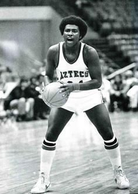
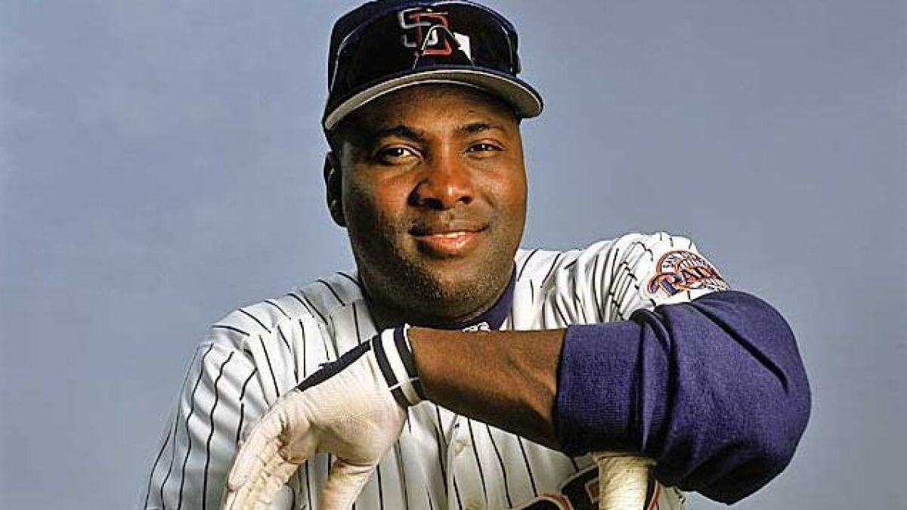

Tony Gwynn was born May 9th, 1960, in Los Angeles, CA. Growing up, he excelled in both basketball and baseball. He went on to attend San Diego State University on a basketball scholarship; ironically, he never received a scholarship to play baseball and considered quitting baseball to focus on basketball. Gwynn's Mother is responsible for talking him out of quitting saying, "it may become something later, and you might regret it." Gwynn would go on to play both basketball and baseball at SDSU. Gwynn would go on to receive All-Conference honors in basketball and All-American honors in baseball.
 Next page >>Tony Gwynn

Mr. Padre
The greatest
hitter since Ted Williams